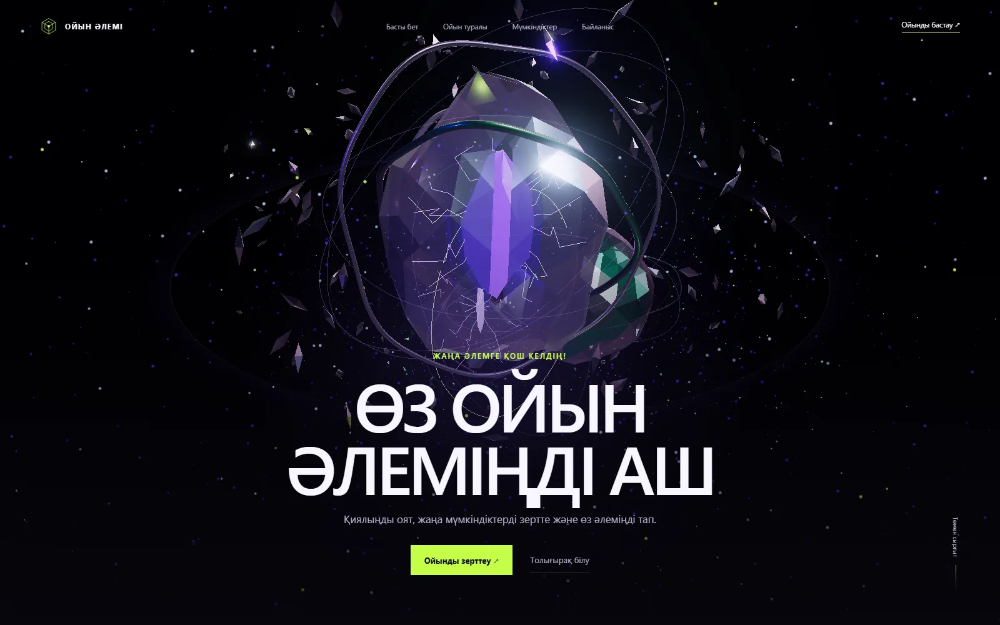
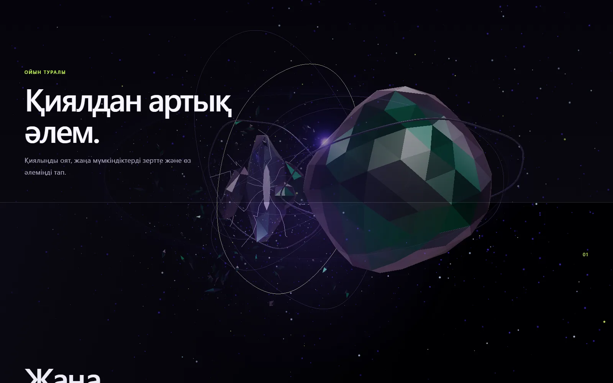
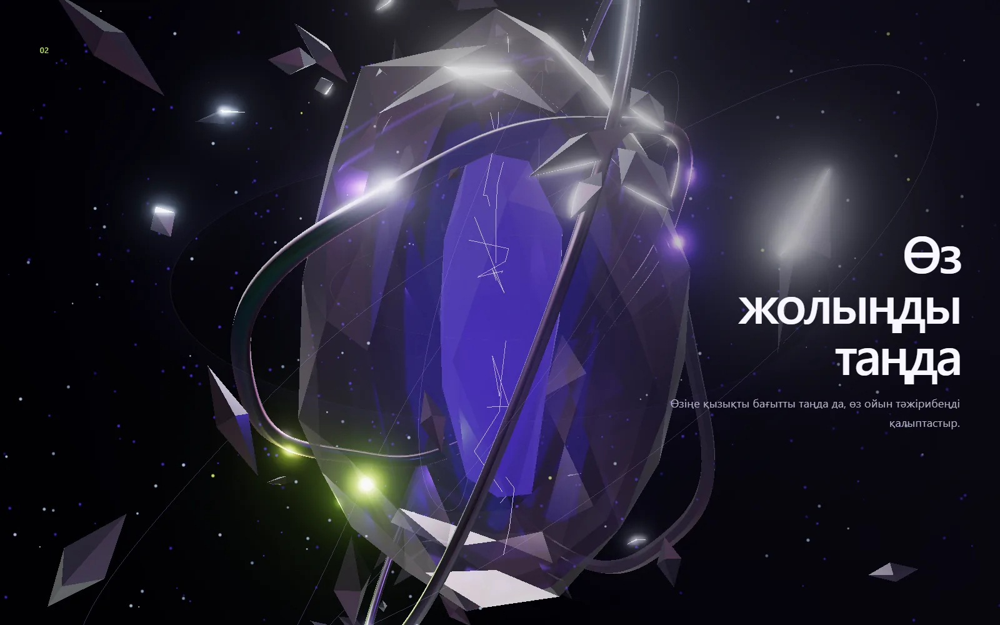
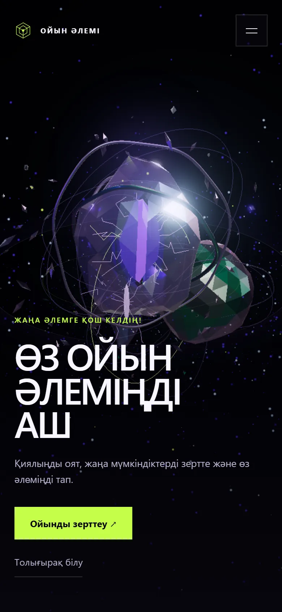

Ойын әлемі
Иммерсивный сайт на казахском, в котором одна 3D-сцена ведёт через шесть глав.

Задача
Сделать одностраничный сайт на казахском, который ощущается как вход в другой мир, а не как набор секций. Figma не использовалась: сцена, типографика и движение собирались сразу в браузере.
Главный герой — портал: слои дымчатого стекла, переливающийся металл, энергетическое ядро и частицы. Вокруг него строится вся драматургия скролла.
Одна сцена вместо шести блоков
Вся графика живёт в одном WebGL-канвасе. ScrollTrigger переводит прогресс страницы в состояние камеры: она приближается, проходит сквозь портал, открывает новые главы и откатывается в финале.
HTML и CSS остаются носителями контента: заголовки, навигация и CTA читаются без WebGL. Это важно и для доступности, и для скорости первого экрана.
«Сайт не рассказывает про игру. Он даёт почувствовать вход в неё.»

Что внутри
- Шесть глав с разными состояниями камеры и света.
- Процедурный портал, частицы, орбиты и сдержанный bloom.
- Lenis + GSAP ScrollTrigger: непрерывный прогресс без рывков.
- Отдельные масштабы сцены и типографики для desktop, tablet и mobile.
- Reduced motion отключает плавную прокрутку и непрерывное движение.
- Статичный градиент и читаемый контент, если WebGL недоступен.


Mobile / 390 × 844
Доступность и границы
Сцена декоративная, весь смысл остаётся в DOM. Навигация, кнопки и тексты доступны с клавиатуры, анимация уважает prefers-reduced-motion.